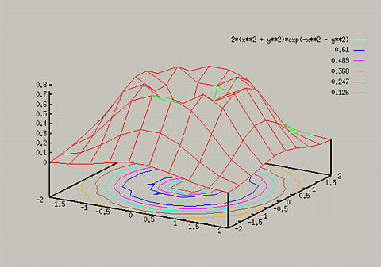
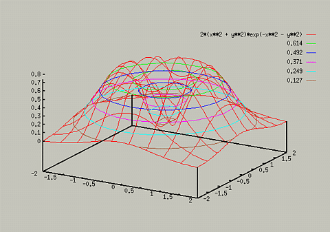

The following commands relate to contour lines in 3D plots:
- set contour base - Draw the contour lines along the
base of the diagram
- set contour surface - Draws the lines along the 3D surface
- set contour both - Draws lines on both surface and base
- set nocontour - Turns off contour lines
Note that the set contour surface option is not available with
the set hidden3d option.
Typing the following commands yields the following two graphs:
- set hidden3d
- set contour base
- splot [-2:2] [-2:2] 2*(x**2 + y**2)*exp(-x**2 - y**2)

- set nohidden3d
- set contour surface
- replot

If only the contours lines are desired, the set nosurface
command will turn off drawing the surface. For more information on
this, type help set surface. The drawing of contour lines is
highly custimizable, for information type help set cntrparam.
For example, if you only want the contour lines for z=.2, .4, .6, you
could enter the following:
- set cntrparam levels discrete .2, .4, .6
Table of Contents - Previous - Increasing Precision of 3D plots - Next - Changing Perspective
College of Natural Sciences /
University of Northern Iowa /
manager@cns.uni.edu
Copyright © 1996 College of Natural Sciences. All Rights Reserved.
Last Modified: 10/29/96